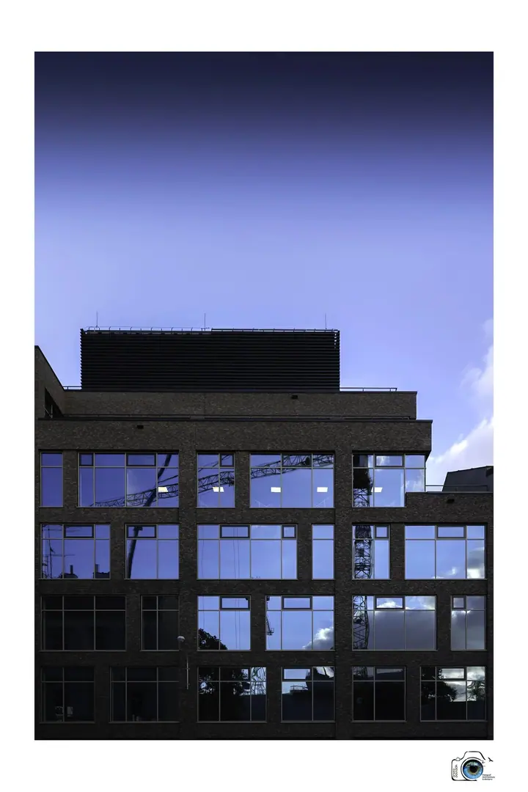
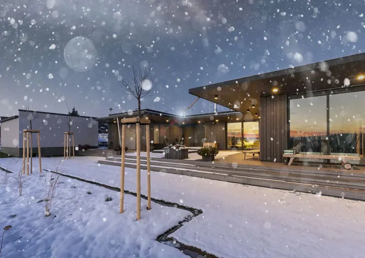
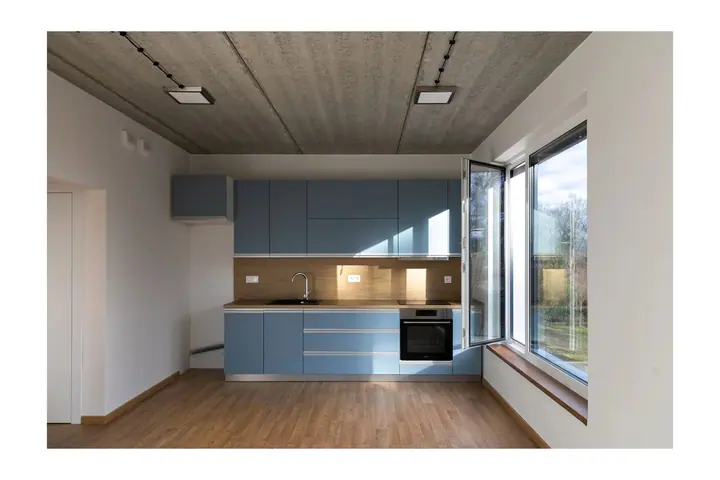

01 / 04
Realitní ART fotografie
Fotografie domů a bytů, které kupujícímu ukážou charakter nemovitosti hned při prvním pohledu. Pomáhají prodat nebo pronajmout rychleji a za lepší cenu, a to i u domů, které se zdají neprodejné.
Zeptat se na termín→







Fotografie, která dává domu osobnost
Zeptat se na termín →(01) Ahoj
Jmenuji se Ondřej Pavlačík a fotím architekturu, interiéry a nemovitosti z Příboru a okolí. V každém domě hledám jeho typický charakter , to kouzlo, kvůli kterému se do něj člověk chce podívat. Fotím rodinné domy, byty, hotely i penziony tak, aby je kupující nebo host pochopil už na první pohled.
(02) Co fotím
01 / 04
Fotografie domů a bytů, které kupujícímu ukážou charakter nemovitosti hned při prvním pohledu. Pomáhají prodat nebo pronajmout rychleji a za lepší cenu, a to i u domů, které se zdají neprodejné.
Zeptat se na termín→02 / 04
Fotím architekturu a design jako výraz lidského umu, a to pro hotely, penziony i časopisy o bydlení. Zajímají mě interiér, exteriér i detail.
Zeptat se na termín→03 / 04
Propojuji fotografii s 3D scanem jako novým marketingovým nástrojem pro prodej nemovitostí. Tuto službu využívají realitní firmy i kulturní a vzdělávací projekty.
Zeptat se na termín→Dále nabízím
Individualizovaný kurz smyslově prodejní fotografie pro realitní makléře. Naučíte se fotit nemovitosti fotoaparátem i mobilem tak, aby oslovily kupující.
↗(03) Portfolio
Kliknutím fotku zvětšíte · fotografie jsou ilustrační
(04) Postup
Od první zprávy po hotovou galerii.
Krok 1 z 4
Probereme, o jaký dům nebo prostor jde a komu má fotka promluvit. Každá nemovitost má jiného kupujícího a jiný příběh.
Krok 2 z 4
Na místě hledám perspektivu a detaily, které zdůrazní silné stránky. Počasí i denní světlo využiji tak, aby podtrhly osobnost místa.
Krok 3 z 4
Fotím interiér, exteriér i detail. Pak vyberu a upravím snímky, které spolu skládají ucelený příběh.
Krok 4 z 4
Hotové fotografie dostanete připravené pro inzerci, web nebo tisk. Na přání je doplním o 3D scan nemovitosti.
Každý dům má svůj typický charakter.
(05) Za objektivem
Jsem fotograf designu architektury jako výrazu lidského umu. Dlouho jsem nevěděl, jestli vůbec nějaký talent mám a kam se mám ubírat. Dnes ho rozvíjím profesionálně v týmu inspirativních lidí, se kterými si vzájemně dáváme lidskou i odbornou podporu.
Moje fotky vycházejí v časopisech Můj dům, Magazín Patriot, Intro nebo dřevo&stavby. Jsem součástí tváře hotelu Resort Cattaleya, Zámečku Petrovice, Penzionu Jurášek, Hotelu Abacie a Villy 603. Rád se pouštím i do zakázek, kde majitel řekne: „Nafoťte to tak, jak jsem to ještě neviděl.“
Dnes propojuji fotografii s 3D scanem nemovitostí. Tuto službu poskytuji realitním firmám a s 3D scanem podporuji i projekty jako Pijaristické zahrady v Příboře, Štramberská trúba nebo Dům Sigmunda Freuda. Realitní makléře také učím, jak fotit nemovitosti, které se prodávají.
Ondřej
Ondřej Pavlačík · Fotograf architektury a nemovitostí
Realitní focení začíná na 5 000 Kč. Přesnou cenu vám řeknu podle velikosti nemovitosti a toho, co potřebujete.
Čím lépe je připravená, tím lépe, ale dokonalý pořádek není podmínkou. Kompozicí umím vést pozornost k tomu podstatnému.
Počasí umím využít. Sníh, mlha i zataženo mohou osobnost nemovitosti naopak zvýraznit.
Ano, vedu individualizovaný kurz smyslově prodejní fotografie pro realitní makléře. Naučíte se fotit fotoaparátem i mobilem a analyzovat fotky jako projektant.
(07) Kontakt
Napište pár vět o tom, co si představujete, a termín, který se vám hodí.